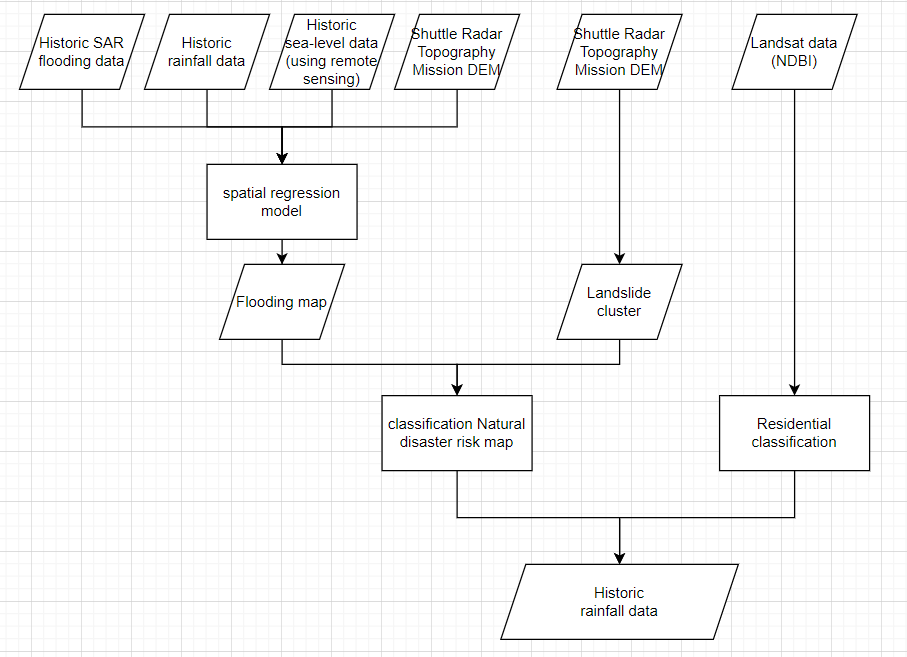

week 04 - Policy Application
In this topic, we will discuss how earth observation can help local governments apply policy requirements to improve their city. As a case study, we chose ARUP City Resilience Framework to be applied in Semarang to solve their annual natural disaster issues as a case study.
Summary (Question 01)
Annual Natural Disaster in Semarang
Semarang is the largest and capital city of Central Java. Due to its location next to Java sea, it becomes main port of Central Java and hold crucial role for food supply. In some area of Semarang, especially coastal area, drinking water is not accessible. Limited water resources forces residents to extract groundwater which cause land subsidence approximatelly 10cm per year. Thus make them suffer from tidal flooding every year. On the other hand, Semarang has fault geological structure that makes it prone to landslide (Faizana, Nugraha and Yuwono, 2015). Local government should anticipate the risk of natural disaster to ensures the continuity of the availability resources for local community (“City Resilience Index,” no date).

Image source: Tiga Orang Tewas Tersetrum Saat Banjir Semarang (cnnindonesia.com)

Image source: Preliminary Identification of Urban Park Infrastructure Resilience in Semarang Central Java
ARUP City Resilience Index
Arup has released City Resilience Index to help city government measure and monitor multiple significant factor to make a city resilience. The index are structured into 4 dimension which each of it are broken down into 3 goals with total 52 indicators.

Under Infrastructure and Ecosystem dimension there are 3 goal which are reduced exposure and fragility (goals 7), effective provision of critical service (goal 8), and reliable mobility and communications (goals 9). There are some indicator that can be achieved by Semarang goverment using remote sensing data


Here are further explanation of each indicators that can be tackled using remote sensing data
7. REDUCED EXPOSURE & FRAGILITY
7.1 Comprehensive hazard and exposure mapping
Robust systems in place to map the city’s exposure and vulnerability to hazards based on current data.
7.3 Effectively managed protective ecosystems
Well-developed understanding and acknowledgement of the role of ecosystems in providing physical protection to the city.
7.4 Robust protective infrastructure
Integrated, forward-looking and robust network of protective infrastructure that reduces vulnerability and exposure of citizens and critical assets.
8. EFFECTIVE PROVISION OF CRITICAL SERVICES
8.1 Effective stewardship of ecosystems
Robust mechanisms are in place to maintain and enhance the ecosystem services that benefi t city residents.
9. RELIABLE MOBILITY & COMMUNICATIONS
9.2 Diverse and affordable transport networks
Diverse and integrated transport networks, providing flexible and affordable travel around the city for all
Application (Question 02)
To be resilience in natural disaster, a city needs comprehensive understanding of which are vulnerable to hazard (indicator 7.1). It can be done by mapping potential natural disaster based on previous flooding and clustering map. Making flooding map can be gained by regressing SAR flooding area data, rainfall data, sea level data (from satellite data), and topography data from Shuttle Radar Mission DEM (Lin et al., 2016). To make Landslide map we can comparing historic topography data from Shuttle Radar Mission DEM which movement of geological structure (Dewan et al., 2007). Combining these 2 maps, Semarang government will can have natural disaster risk map that can be guideline for city planning to focus on areas with high risk.
Natural disaster can cause some residential areas be isolated. Thus, emergency access are required for massive evacuation and supply daily needs which also the indicator in goals number 9 in City Resilience Index. City government need to map crucial acces and alternative acces on disaster. In order to do that, mapping or clustered residential area are required which can be obtain from classifying landsat imagery data using NDBI. By assessing residential map dan natural disaster risk map, government can make crucial emergency transportation plan. It also can be enhance with agent-based modelling to simulate evacuation and basic needs supply. Hence, government can focusing their policy and city planning in building or improving emergency transportation access.

Reflection (question 03)
International policy help local government, that sometimes does not have a robust policy, to build and develop a resilience city. In order to achieve International policy’s target, earth observation data can be a helpful resources for decision making and city planning. Satellite imagery data allows government to have macro and micro scale observation of their historic or existing city condition. It can be beneficial to detect existing urban fabrics and potential urban network. Imagery data are also beneficial to record pre-during-post condition of an event or disaster. Thus in the future local government can prevent or protect their citizen better especially for city with periodic disaster like Semarang or Greater Dhaka (Dewan et al., 2007). Remote Sensing data allows Semarang government to achieve not only one but five indicators of ARUP City Resilience Index.